Магнитная система с
самарий-кобальтовыми постоянными магнитами для
отжига сердечников феррозондов на основе аморфных лент в магнитном поле
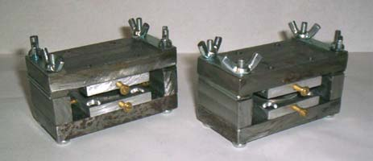
1. Введение
Использование аморфных магнитомягких материалов в качестве сердечников феррозондов [12] позволяет существенно улучшить их характеристики, в частности, значительно снизить уровень шума и поднять чувствительность и разрешающую способность. Для повышения уровня магнитных свойств аморфных материалов весьма часто используется их отжиг при температуре вблизи точки Кюри. На рис. 1.1 показана петля гистерезиса [15] исходного материала (аналог VAC 6025, температура Кюри 200 0C, температура кристаллизации 530 0С) и отожженного в печи [9] при температуре 270 0C в течение двух часов (рис. 1.2). Видно, что после отжига магнитные характеристики существенно улучшились, в частности, коэрцитивная сила уменьшилась примерно вдвое, а петля гистерезиса стала менее прямоугольной и более гладкой.
Рис. 1.1. Кривая намагничивания кольца К14.9х14.5х1 из аморфной ленты на основе кобальта на частоте 1 кГц. Цена деления по горизонтали 0.5 Э ≈ 39.8 А/м. Цена деления по вертикали 0.4 Тл. Коэрцитивная сила по индукции HCB ≈ 0.1 Э ≈ 8 А/м.

Рис. 1.2. Кривая намагничивания кольца К14.9х14.5х1 из аморфной ленты на основе кобальта после отжига (270 0C, два часа) на частоте 1 кГц. Цена деления по горизонтали 0.5 Э ≈ 39.8 А/м. Цена деления по вертикали 0.4 Тл. Коэрцитивная сила по индукции HCB << 0.05 Э ≈ 4 А/м.
Дополнительные изменения магнитных свойств могут быть получены при проведении отжига в постоянном или переменном магнитном поле и/или под нагрузкой. Наиболее простой способ - отжиг с помощью электрического тока, проходящего по аморфной ленте или проволоке, который одновременно и нагревает образец и создает ориентирующее магнитное пол [4], имеющее круговой характер. Используются также специальные печи с постоянными магнитами, создающими ориентирующее магнитное поля [5]. Эти магниты должны выдерживать соответствующую температуру порядка 300 0C без потери магнитных свойств. В частности, возможно применение для этой цели самарий-кобальтовых магнитов [8].
Для целей отжига магнитных материалов в постоянном магнитном поле была сконструирована и изготовлена магнитная система, позволяющая создавать как преимущественно аксиальное, так и преимущественно радиальное магнитное поле в зависимости от взаимной ориентации постоянных магнитов системы. Помимо этого магнитная система может также применяться при проведении магнитных измерений при повышенной температуре или для генерации ориентирующего поля при производстве магнитопластов [6].
2. Конструкция
С учетом опыта конструирования магнитной системы на цилиндрических постоянных магнитах состава неодим-железо-бор [8] с остаточной индукцией более 1 Тл и коэрцитивной силой по намагниченности около 1000 кА/м, генерирующей в рабочем зазоре диаметром 20 мм высотой 5 мм магнитное поле с индукцией порядка 1 Тл [7], была рассчитана и изготовлена аналогичная магнитная система на постоянных магнитах состава самарий-кобальт, позволяющих работать при повышенных температурах (примерно до 300 0C). Система состоит из двух постоянных цилиндрических магнитов состава самарий-кобальт (КС25, КС37), намагниченных вдоль оси в установке импульсного намагничивания [16]. Магниты устанавливаются внутри О-образного стального ярма, служащего для замыкания магнитного потока, либо разноименными, либо одноименными полюсами навстречу друг к другу, что позволяет получить в рабочем зазоре либо аксиальное, либо радиальное магнитное поле. Эскиз магнитной системы показан на рис. 2.1.
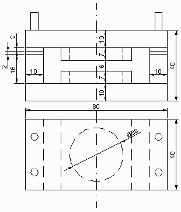
Рис. 2.1. Эскиз магнитной системы на самарий-кобальтовых магнитах: цилиндрические постоянные магниты типоразмера Д30х7 (диаметр 30 мм, высота 7 мм) состава Sm-Co имеют намагниченность вдоль оси, ярмо состоит из верхней, нижней и двух боковых стальных плит толщиной 10 мм каждая (малоуглеродистая стальСт3, Ст10), для регулировки рабочего зазора используются стальные прокладки толщиной 2 мм.
3. Расчеты
3.1. Оценочный расчет с помощью программы AM_System
Программа Axial Magnetic System [2] позволяет рассчитывать магнитную индукцию системы двух соосных аксиально намагниченных кольцевых и, в частности, цилиндрических постоянных магнитов с последовательным или встречным направлением намагниченности. Программа не учитывает наличие стального ярма, поэтому расчет предназначен для оценки нижней границы величины магнитной индукции в рабочем зазоре. На рис. 3.1.1 и 3.1.2 показаны рабочие окна программы AM_System для двух вариантов взаимной ориентации постоянных магнитов. В первом случае магнитное поле аксиальное, направлено в основном по оси Z. Во втором случае магнитное поле радиальное, основное направление - по оси X. Остаточная магнитная индукция принята равной 0.8 Тл по результатам измерений используемых постоянных магнитов (п. 4).
Рис. 3.1.1. Расчет магнитной индукции в зазоре между двумя постоянными магнитами: материал Sm-Co, типоразмер Д30х7, остаточная индукция 0.8 Тл, рабочий зазор 6 мм, направление намагниченности обоих магнитов - в одну сторону вверх по оси Z, точка расчета отстоит на 10 мм от центра по радиусу.
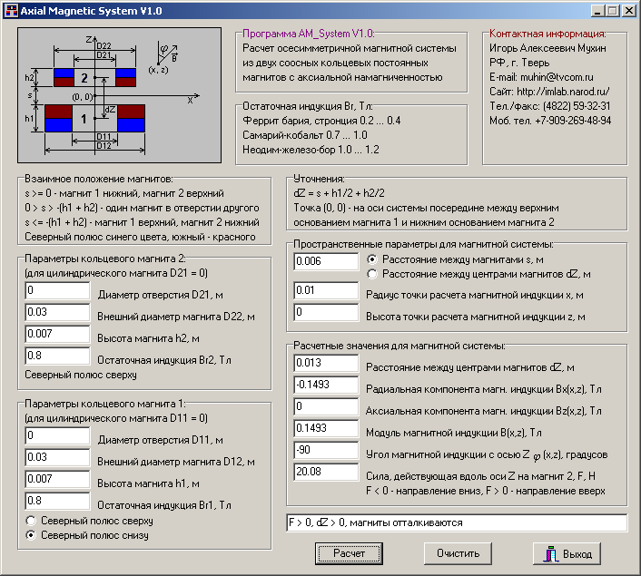
Рис. 3.1.2. Расчет магнитной индукции в зазоре между двумя постоянными магнитами: материал Sm-Co, типоразмер Д30х7, остаточная индукция 0.8 Тл, рабочий зазор 6 мм, направление намагниченности противоположное, у верхнего магнита - вверх по оси Z, у нижнего - вниз по оси Z, точка расчета отстоит на 10 мм от центра по радиусу.
На рис. 3.1.3 показано распределение аксиальной составляющей магнитной индукции в системе двух постоянных магнитов с одинаковым направлением намагниченности в середине рабочего зазора 2 ... 6 мм в зависимости от расстояния от центра, а на рис. 3.1.4 - распределение радиальной составляющей при противоположном направлении намагниченности магнитов также в зависимости от расстояния от центра.
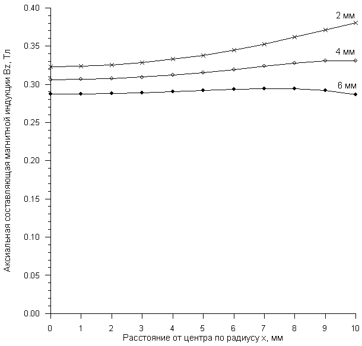
Рис. 3.1.3. Аксиальная составляющая магнитной индукции в середине рабочего зазора в системе двух постоянных магнитов с одинаковым направлением намагниченности в зависимости от радиального расстояния от центра системы: магниты Sm-Co, типоразмер Д30х7, остаточная индукция 0.8 Тл, рабочий зазор 2 (x) , 4 (○), 6 (●) мм.
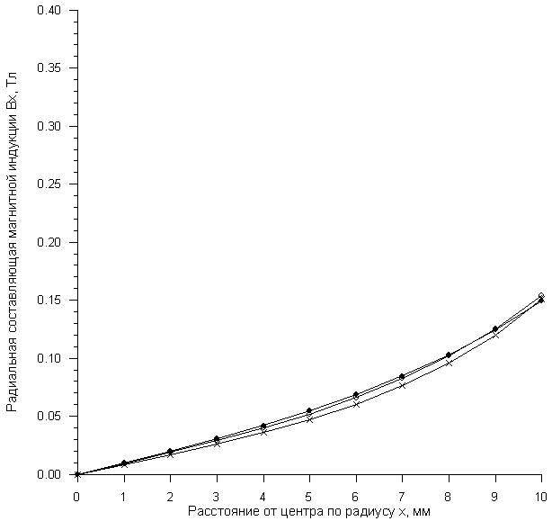
Рис. 3.1.4. Радиальная составляющая магнитной индукции (абсолютная величина) в середине рабочего зазора в системе двух постоянных магнитов с противоположным направлением намагниченности в зависимости от радиального расстояния от центра системы: магниты Sm-Co, типоразмер Д30х7, остаточная индукция 0.8 Тл, рабочий зазор 2 (x) , 4 (○), 6 (●) мм.
Из рис. 3.1.3 видно, что аксиальная составляющая магнитной индукции в системе с магнитами одинаковой ориентации примерно постоянна во всем объеме рабочего зазора. В то же время рис. 3.1.4 показывает, что в системе с магнитами противоположной ориентации радиальное магнитное поле достигает приемлемых значений по величине индукции ближе к краям рабочего зазора, причем величина зазора почти не влияет на величину индукции. Это необходимо учитывать при выборе способа отжига для помещаемых в магнитную систему образцов различного размера.
3.2. Расчет методом конечных элементов
Перед изготовлением магнитной системы был произведен расчет ее параметров методом конечных элементов [3, 14] для постоянных магнитов состава самарий-кобальт, обладающих следующими свойствами [8]: остаточная индукция 0.8 Тл, коэрцитивная сила по намагниченности 600 кА/м, магнитная проницаемость 1.06. Принятые для расчетов магнитные свойства стали, использованной для изготовления ярма, показаны на рис. 3.2.1 (соответствуют марке стали Ст3 или Ст10). Трехмерная расчетная модель магнитной системы в программе Ansoft Maxwell [3] изображена на рис. 3.2.2. Результаты расчета магнитной индукции для систем с разной взаимной ориентацией магнитов в рабочем зазоре 6 мм представлены на рис. 3.2.3 и 3.2.4.
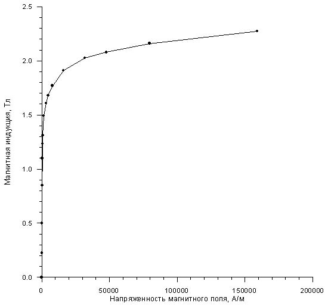
Рис. 3.2.1. Кривая намагничивания малоуглеродистой стали (Ст3, Ст10), использованной при расчете магнитной системы.
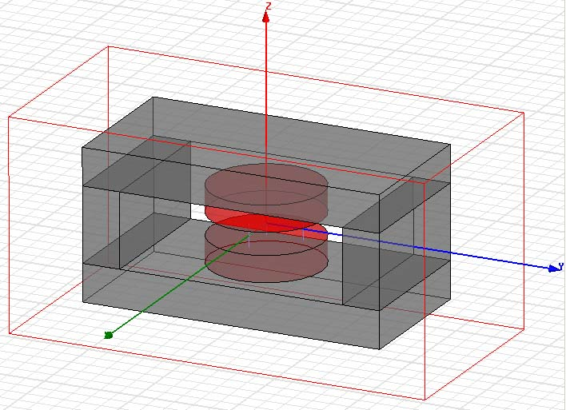
Рис. 3.2.2. Трехмерная модель магнитной системы для расчета методом конечных элементов в программе Ansoft Maxwell [3]: магниты показаны красным цветом, стальное ярмо - серым, рабочий зазор 6 мм, шаг сетки 5 мм.
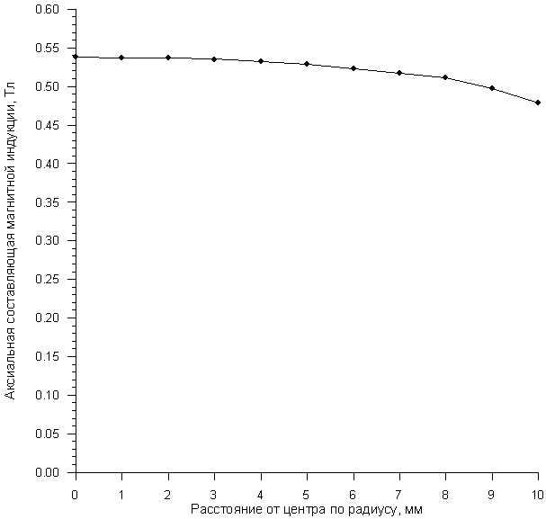
Рис. 3.2.3. Аксиальная составляющая магнитной индукции в середине рабочего зазора 6 мм (нормальная составляющая вдоль оси 0 - Y) магнитной системы (рис. 3.2.2) с одинаковой ориентацией намагниченности магнитов в зависимости от расстояния от центра системы.
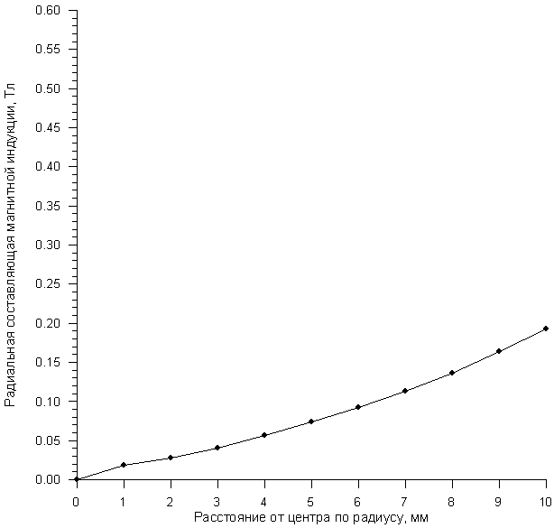
Рис. 3.2.4. Радиальная составляющая магнитной индукции в середине рабочего зазора 6 мм (нормальная составляющая вдоль оси 0 - Y) магнитной системы (рис. 3.2.2) с противоположной ориентацией намагниченности магнитов в зависимости от расстояния от центра системы.
Использование магнитного ярма позволяет существенно повысить магнитную индукцию в рабочей зоны системы с одинаковой взаимной ориентацией намагниченности магнитов. В то же время в системе с противоположной взаимной ориентацией намагниченности магнитов величина индукции радиального магнитного поля возрастает не слишком существенно при использовании магнитного ярма. Расчеты также показывают, что несмотря на некоторую степень осевой несимметричности системы (боковые стенки, свободный доступ спереди и сзади) магнитное поле практически одинаковое вдоль осей X и Y (рис. 3.2.2), т. е магнитное поле в системе является осесимметричным.
3.3. Расчет методом магнитных сопротивлений
Дополнительно был также выполнен расчет магнитной системы с магнитами одинаковой ориентации методом магнитных проводимостей (магнитных сопротивлений) [10]. Эквивалентная магнитная цепь магнитной системы приведена на рис. 3.3.1.

Рис. 3.3.1. Эквивалентная магнитная цепь магнитной системы. Fm – магнитодвижущая сила одного магнита, Rm – магнитное сопротивление одного магнита, Rg – магнитное сопротивление воздушного зазора, Rud – магнитное сопротивление половины верхней или нижней стальной плиты, Rlr – магнитное сопротивление боковой стальной плиты.
Для эквивалентной магнитной цепи можно записать соотношение:
где F – магнитный поток через воздушный зазор, Fm – магнитодвижущая сила (МДС) одного постоянного магнита, R – суммарное магнитное сопротивление цепи:
где Rm - магнитное сопротивление одного магнита, Rg - магнитное сопротивление воздушного зазора, Rud - магнитное сопротивление половины верхней или нижней стальной плиты, Rlr - магнитное сопротивление боковой стальной плиты. МДС магнита может быть выражена через его остаточную индукцию Br, магнитную проницаемость mM (mM ≈ 1.05) и высоту (толщину) h (h = 7 мм):

где m0 = 4p ∙ 10-7 Гн/м – магнитная постоянная. Тогда магнитная индукция в воздушном зазоре системы B0:

где H0 – напряженность магнитного поля в воздушном зазоре, величина которого равна g.

Магнитное сопротивление воздушного зазора Rg:
где D2 – диаметр магнита и, соответственно, воздушного зазора (D2 = 30 мм). Магнитное сопротивление постоянного магнита Rm:

Магнитное сопротивление половины верхней или нижней стальной плиты Rud:
где lUD – расстояние, которое проходит магнитный поток в половине верхней или нижней стальной плиты (lUD = 35 мм), mST – магнитная проницаемость стали (mST ≈ 1000), T – толщина плиты (T = 10 мм), b – ширина плиты (b = 40 мм). Магнитное сопротивление боковой стальной плиты Rlr:

где lLR – расстояние, которое проходит магнитный поток в боковой стальной плите (lLR = 30 мм, когда g = 6 мм). Тогда:

Для значений:
Br = 0.8
Тл
h = 0.07 м
g = 0.006 м
D2 = 0.03 м
b = 0.04 м
T = 0.01 м
lUD
= 0.035 м
lLR
= 0.03 м
mM
= 1.06
mST
= 1000
получаем:
Для значений:
Br = 0.8
Тл
h = 0.07 м
g = 0.004 м
D2 = 0.03 м
b = 0.04 м
T = 0.01 м
lUD
= 0.035 м
lLR
= 0.028 м
mM
= 1.06
mST
= 1000
получаем:
Для значений:
Br = 0.8
Тл
h = 0.07 м
g = 0.002 м
D2 = 0.03 м
b = 0.04 м
T = 0.01 м
lUD
= 0.035 м
lLR
= 0.026 м
mM
= 1.06
mST
= 1000
получаем:
Результат расчета магнитной индукции 0.548 Тл для рабочего зазора шириной 6 мм хорошо согласуется с рассчитанным методом конечных элементов значением в центре системы 0.54 Тл (рис. 3.2.3).
4. Определение остаточной индукции постоянного магнита
Для точного измерения остаточной магнитной индукции редкоземельных постоянных магнитов необходимо весьма сложное, дорогое и громоздкое оборудование - электромагнит для получения полей порядка 2 Тл и даже более с блоком питания [17], гистериограф или вибрационный магнитометр, двухканальное устройство записи. В то же время достаточно точно оценить этот параметр можно, произведя измерения магнитной индукции с помощью тесламетра [11] с датчиком Холла на поверхности торца цилиндрического магнита, а затем сделав пересчет в представлении магнита эквивалентным тонкостенным соленоидом с током. Для пересчета удобно использовать программу Annular Magnet [1].
Для уточнения остаточной индукции используемых цилиндрических постоянных магнитов была измерена магнитная индукция в центре торцов четырех вместе сложенных магнитов типоразмера Д30х7. Увеличение высоты магнита позволяет уменьшить погрешность измерений, связанную с достаточно большим градиентом магнитной индукции по оси вблизи торца магнита небольшой высоты. Оптимальной для измерений можно считать высоту столбика, примерно равную или близкую к его диаметру [13]. При этом магнитная индукция в центре торца довольно близка к половине остаточной. Результаты измерений: северный полюс - 344 мТл, южный полюс - 322 мТл, в среднем 333 мТл. Далее был сделан расчет магнитной индукции на торце цилиндрического магнита с помощью программы Annular Magnet [1] в предположении, что остаточная индукция постоянных магнитов состава Sm-Co составляет 0.8 Тл. Расчетное значение магнитной индукции на торце цилиндрического магнита Д30х28 (четыре сложенных магнита Д30х7) при этом составило 352.6 мТл (рис. 4.1), что хорошо согласуется с результатом измерений (333 мТл) с учетом того, что чувствительная зона датчика Холла при измерениях реально несколько отстоит от расчетной точки вследствие его ненулевой толщины. Таким образом, остаточную индукцию используемых постоянных самарий-кобальтовых магнитов можно принять равной 0.8 Тл для целей расчета магнитных систем на их основе.
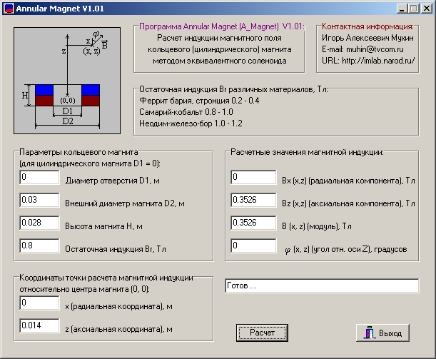
Рис. 4.1. Расчет магнитной индукции в центре торца цилиндрического магнита состава Sm-Co (остаточная индукция 0.8 Тл) типоразмера Д30х28 (четыре сложенных магнита типоразмера Д30х7).
5. Испытания магнитной системы
Внешний вид изготовленной по вышеприведенным расчетам магнитной системы показан на рис. 5.1.
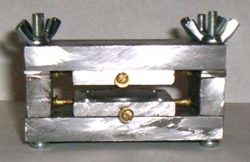
Рис. 5.1. Внешний вид магнитной системы на самарий-кобальтовых постоянных магнитах типоразмера Д30х7 (величина зазора 6 мм).
Измерения индукции магнитного поля в зазоре изготовленной магнитной системы проводились с помощью тесламетра [11]. Результаты измерений достаточно хорошо согласуются с данными расчетов (рис. 5.2, 5.3).
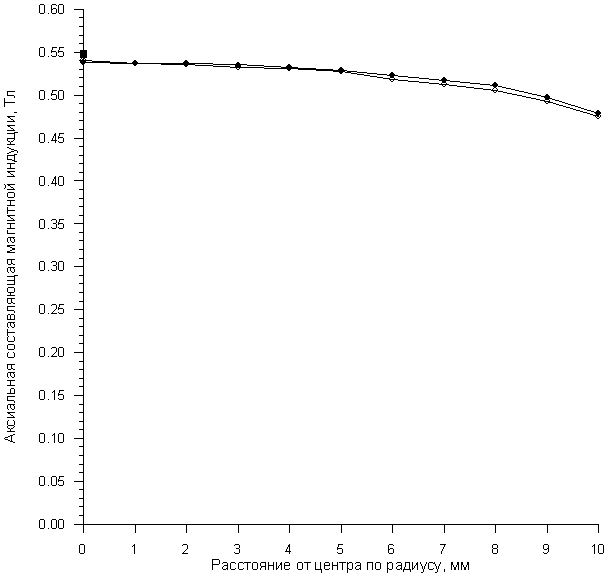
Рис. 5.2. Результаты расчетов и измерений аксиальной составляющей магнитной индукции в середине зазора магнитной системы при установке самарий-кобальтовых постоянных магнитов с одинаковым направлением намагниченности (величина зазора 6 мм, ■ - расчет методом магнитных проводимостей (магнитных сопротивлений), ● - расчет методом конечных элементов, ○ - измерения).
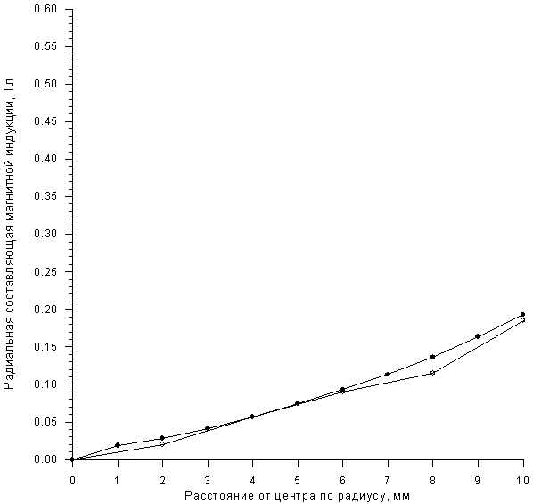
Рис. 5.3. Результаты расчетов и измерений радиальной составляющей магнитной индукции в середине зазора магнитной системы при установке самарий-кобальтовых постоянных магнитов с встречным направлением намагниченности (величина зазора 6 мм, ● - расчет методом конечных элементов, ○ - измерения)..
Характеристики изготовленной магнитной системы приведены ниже:
При обратимой утрате магнитных свойств вследствие нагревания постоянные магниты системы могут быть вновь намагничены до насыщения с помощью установки импульсного намагничивания [16].
Ссылки:
10.08.2026
Альтернативные источники
энергии
Компьютеры и
Интернет
Магнитные поля
Механотронные системы
Перспективные
разработки
Электроника и
технология